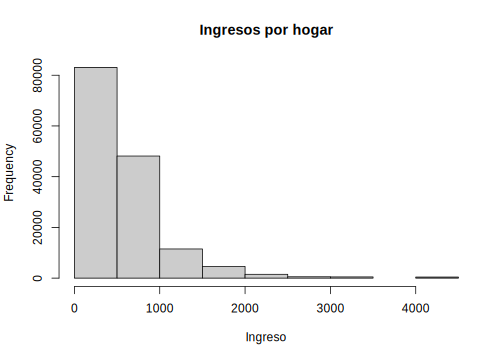
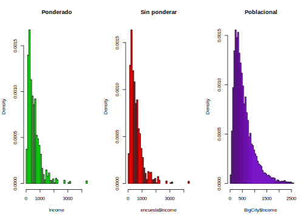
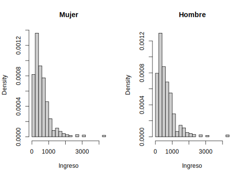
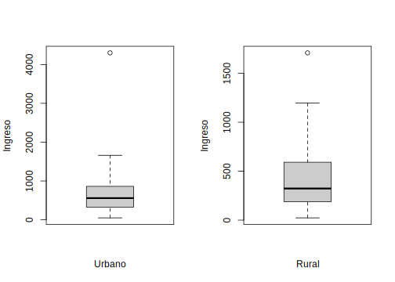

4.2 Análisis gráfico: Histogramas y Boxplot
Una vez cargada la muestra a R y definido el diseño muestral del cual proviene se pueden hacer los primeros análisis. Como es natural, se inician con análisis gráficos. A continuación, se muestran los códigos computacionales con los cuales se hacen histogramas en R para la variable ingresos teniendo en cuenta el diseño muestral y los factores de expansión haciendo uso la función svyhist de la librería survey.
library(survey)
library(srvyr)
svyhist(
~ Income ,
diseno,
main = "Ingresos por hogar",
col = "grey80",
xlab = "Ingreso",
probability = FALSE
)
Como se pudo observar en el código anterior, para generar un histograma teniendo en cuenta el diseño muestral se usó la función svyhist. En primer lugar, se definió la variable a graficar, que para nuestro caso fue Income. Seguido, se define el diseño muestral utilizado en la encuesta. Luego, se definen los argumentos relacionados con la estética del gráfico como lo son: el título principal (main), el color (col) y el título horizontal (xlab). Finalmente, se define si el histograma es de frecuencias o probabilidades con el argumento probability. Para este ejemplo, se tomó la opción probability = False indicando que es un histograma de frecuencias.
Una pregunta que surge de manera natural es ¿cuál es la diferencia entre los histogramas sin usar los factores de expansión y utilizándolo? A continuación, se generan 3 histogramas, en el primero se grafica la variable ingreso utilizando los factores de expansión, en el segundo se grafica la misma variable sin usar los factores de expansión y en el tercero, se hace el gráfico poblacional.
library(survey)
data("BigCity", package = "TeachingSampling")
par(mfrow = c(1,3))
svyhist(~ Income,
diseno, main = "Ponderado",
col = "green", breaks = 50)
hist( encuesta$Income,
main = "Sin ponderar",
col = "red", prob = TRUE, breaks = 50)
hist(BigCity$Income,
main = "Poblacional",
col = "purple", prob = TRUE,
xlim = c(0, 2500), breaks = 500)
Uno de los análisis gráficos más comunes que se realizan ene encuestas de hogares están relacionados con subgrupos geográficos como lo son las zonas (urbano - rural) o también realizar desagregaciones temáticas como lo son por sexo (hombre mujer). A continuación, se muestra la sintaxis en R como se realizan histogramas para hombres y mujeres mayores de 18 años:
sub_Mujer <- diseno %>% filter(Sex == "Female")
sub_Hombre <- diseno %>% filter(Sex == "Male")
par(mfrow = c(1,2))
svyhist(
~ Income ,
design = subset(sub_Mujer, Age >= 18),
main = "Mujer",
breaks = 30,
col = "grey80",
xlab = "Ingreso")
svyhist(
~ Income ,
design = subset(sub_Hombre, Age >= 18),
main = "Hombre",
breaks = 30,
col = "grey80",
xlab = "Ingreso")
Como se puede observar, los argumentos utilizando para realizar los gráficos son los mismo que se utilizaron y ejemplificaron anteriormente. Cabe notar que la función subset permite hacer un subconjunto de la población, que para nuetro caso son aquellos hombres y mujeres mayores o iguales a 18 años.
Si el objetivo ahora es realizar análisis de localización y variablidad, por ejemplo, graficar Bloxplot teniendo en cuenta los factores de expansión, a continuación, se muestran las sintaxis de como realizarlo en R.
sub_Urbano <- diseno %>% filter(Zone == "Urban")
sub_Rural <- diseno %>% filter(Zone == "Rural")
par(mfrow = c(1,2))
svyboxplot(
Income~1 ,
sub_Urbano,
col = "grey80",
ylab = "Ingreso",
xlab = "Urbano")
svyboxplot(
Income ~ 1 ,
sub_Rural,
col = "grey80",
ylab = "Ingreso",
xlab = "Rural")
Los argumentos usados en la función svyboxplot para generar el gráfico son muy similares a los usados en la función svyhist. Algo a recalcar el los argumentos de esta función es que el símbolo “Income ~ 1” hace referencia a que todas las personas pertenecen a un solo grupo que puede ser urbano o rural dependiendo del caso y por eso se requiere indicarle a R esa restricción, lo cual se hace con el símbolo “~1”.